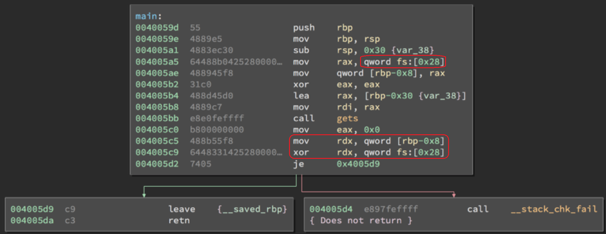

https://ctf101.org/binary-exploitation/stack-canaries/
https://d3fend.mitre.org/technique/d3f:StackFrameCanaryValidation/
very deep guide
- canaries are initialized with program startup.
- there are different types of canaries, one being random canary.
- a random number is generated from /dev/random and put on the stack after the buffer and before the return. address.
- there is a NULL char 0x00 at the begining of the canary.
- The NULL byte at the beginning of the canary would present a problem for many string operations to print.
- example of a canary value - 0x08A5F900
- Canaries in 64 bit programs follow the same principles, but will use the extra 32 bits for entropy.
- Stack canaries will be checked for their value just before the return to the calling function
The random XOR canary will be like the random canary, except it will be XOR’ed against a non-static value in the program (usually the Base Pointer EBP). As operating systems nowadays run with Address Space Layout Randomization (ASLR) activated, EBP will not be static across runs of the program. This adds an extra layer of randomization to the cookie, making it hard to predict this value.
If the attacker performs a malicious action before the epilogue is called, then this protection will not be effective. This includes altering the logic of the program by altering the values of local variables stored on the function stack, or by causing an exception and exploiting the exception mechanism such as the SEH (Structured Exception Handling) mechanism on Windows.
